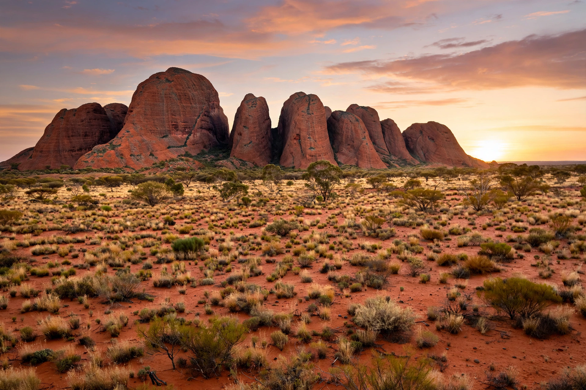

Kata Tjuta
From Wikipedia, the free encyclopedia

Kata Tjuta, also known as the Olgas, is a group of 36 large domed rock formations in Australia's Northern Territory, within Uluṟu-Kata Tjuṯa National Park, about 25 km west of Uluru. sacred to the Aṉangu people, whose name for it means 'many heads', Kata Tjuta's domes of conglomerate rise to 546 metres at Mount Olga — higher than Uluru — and its restricted valleys (Valley of the Winds, Walpa Gorge) are central to Tjukurpa law, much of it closed to uninitiated knowledge.
Geology and naming
The domes are the eroded edge of a vast alluvial fan of granite-and-basalt conglomerate laid down some 500 million years ago alongside Uluru's arkose. Ernest Giles named the highest dome Mount Olga in 1872 for Queen Olga of Württemberg; dual naming — Kata Tjuta / Mount Olga — was formalised in 1993, and the park, a UNESCO World Heritage Site for both culture and nature, is jointly managed by Aṉangu and Parks Australia since the 1985 handback.
Visiting
Unlike Uluru, Kata Tjuta is best experienced on its walking tracks at dawn and dusk, when the domes burn red; photography is restricted in sensitive areas, and the sheer scale of the domes against the desert surprises visitors who arrive expecting Uluru's supporting act.